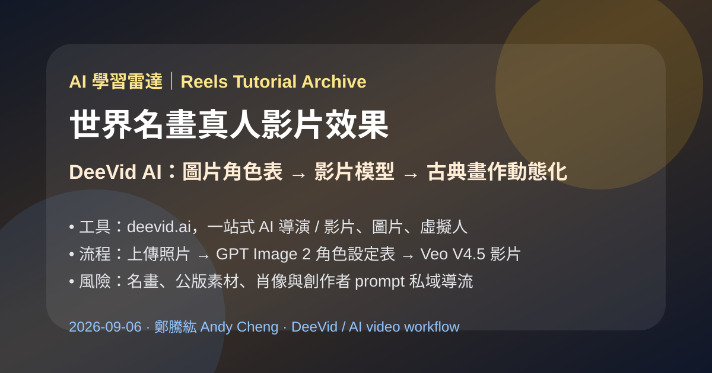
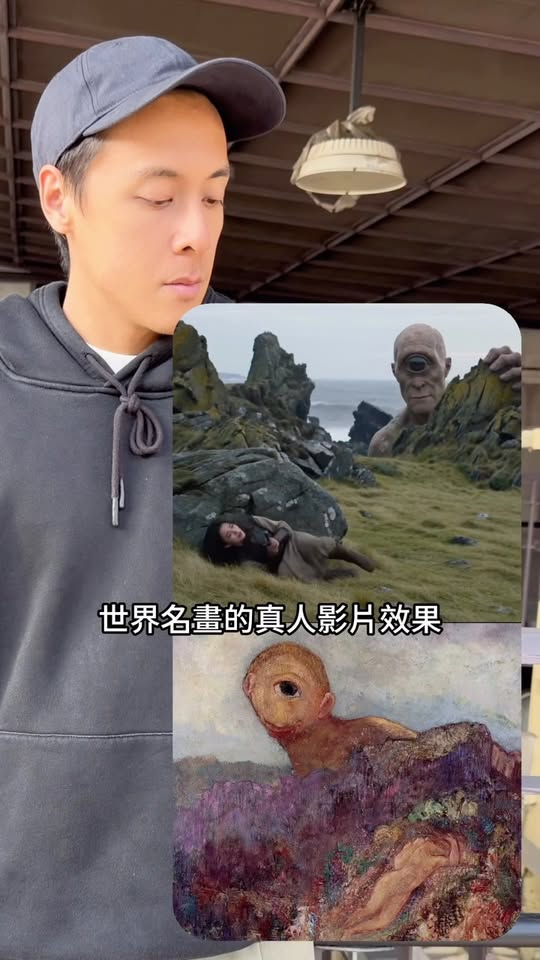
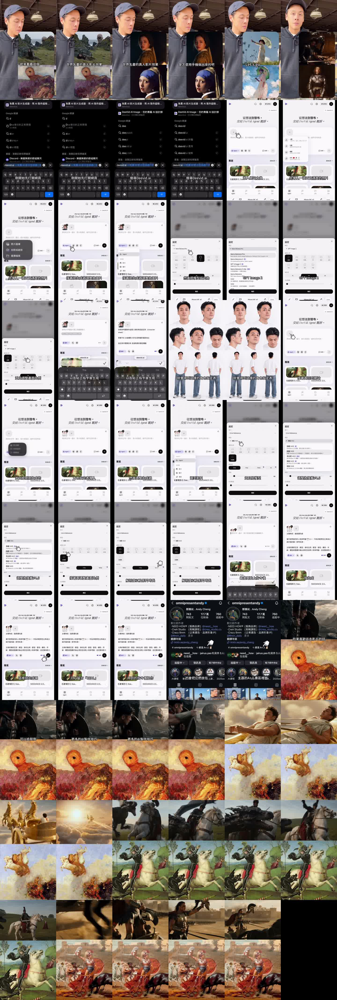

Facebook｜鄭騰紘 Andy Cheng：用 DeeVid AI 把世界名畫做成真人電影感影片

一句話摘要
這支 Reel 展示的是「古典名畫 → 角色設定表 → 電影感真人影片」的快速 AI 工作流。核心工具是 DeeVid AI；流程先用圖片模型做角色設定表，再把設定表交給影片模型生成帶有真人演出感的短片。它適合收進 AI 學習雷達，作為 image-to-video、角色一致性與視覺再詮釋教學案例。
來源脈絡
- Facebook 分享連結：https://www.facebook.com/share/r/1C7N4CZmwY/?mibextid=wwXIfr
- Reel canonical：https://www.facebook.com/61567324513096/videos/4412007099116460/
- 作者：鄭騰紘 . Andy Cheng
- Reel ID：4412007099116460
- 影片長度：約 59 秒
- Facebook OpenGraph：138 個心情、222 則留言；yt-dlp 擷取觀看數約 18,799
- Caption：30 秒學會世界名畫的真人影片效果；留言「REAL」可取得影片用到的指令；hashtag 包含 #Andy的reels教學、#剪輯教學、#Ai、#deevid。
Reel 可見流程
- 開頭展示多個「世界名畫 / 古典畫作」被轉成真人電影感動態畫面的例子。
- 用手機瀏覽器搜尋 `deevid.ai`，進入 DeeVid AI。
- 先導入一張五官清楚的照片。
- 把生成器調整為「圖片」。
- 模型設定為 `GPT Image 2`。
- 調整畫面比例，貼上指定 prompt 後生成。
- 得到一張角色設定表：同一人物的正面、側面、背面、不同角度與全身照。
- 回到 DeeVid，把剛生成的角色設定表導入。
- 把生成器切到「影片」。
- 模型調整為 `Veo V4.5` 類影片模型，並設定比例、解析度與影片時長。
- 貼上第二段 prompt 後生成，得到類似古典名畫真人化、電影化的動態片段。


官方產品脈絡：DeeVid AI
DeeVid 官網將自己定位為「從想法到發布，由你的 AI 創作團隊完成」的一站式 AI 導演，支援影片、圖片、虛擬人、語音與音樂。官網也列出圖片轉影片、AI 廣告產生器、AI 圖片產生器、AI 虛擬分身、文字轉語音、AI 音樂等功能，並強調可在同一工作流中從 Agent、Canvas 到 Editor 完成創作。
官網也標示 DeeVid 會依任務場景匹配模型，列出 Seedream、Sora 2、Veo 3.1、Dall-E 2、Wan 2.1、Runway、Kling、Hailuo、Stable Diffusion、Vidu、Haiper、Luma、Nano Banana Pro、Pika 等模型/供應源。Reel 畫面中的 GPT Image 2、Veo V4.5 應視為當下工具介面可選模型，實際名稱與可用性可能隨 DeeVid 後台更新。
DeeVid：
為什麼值得收進 AI 學習雷達
- 這是「先產角色設定表，再做影片」的清楚示例，可降低 image-to-video 角色跑版問題。
- 名畫真人化是很適合課堂示範的 prompt engineering 題材：既能看見風格轉換，也能討論公版、二創與商用限制。
- DeeVid 類工具代表 AI 影片平台正在從單模型生成，走向「多模型調度 + Agent + Canvas + Editor」的一站式創作平台。
- 對 Reels / Shorts / TikTok 創作者來說，這類流程可快速生成視覺鉤子，但需要建立素材授權與審稿規範。
合規與使用提醒
- 世界名畫未必全部都是公版；即使原畫作公版，博物館高解析掃描、現代修復圖、展覽照片仍可能有使用條款。
- 若使用真人照片或肖像生成角色設定表，應取得被攝者同意，尤其是商業投放或公開發布。
- 創作者在 Reel 中以留言「REAL」取得 prompt，屬私域導流；本篇只保存公開可見流程，不收錄未公開指令。
- 對企業或課程應用，建議把 prompt 拆成：素材來源確認、角色一致性、鏡頭語言、動作、光線、片長、輸出比例、版權檢查。
可轉成正向教學的範例
- 用公版名畫做「動態藝術史」短片，標註原作者、年份、館藏來源與授權狀態。
- 用自己拍攝的人像建立角色設定表，再改寫成原創劇情，而非直接仿作他人影片。
- 比較不同影片模型對同一角色設定表的穩定度：臉部一致性、服裝一致性、動作自然度、鏡頭連續性。
- 在課堂上討論 AI 生成內容的 attribution、版權、公版、fair use / 合理使用與平台政策。
原始連結
Facebook Reel：
https://www.facebook.com/reel/4412007099116460
DeeVid AI：